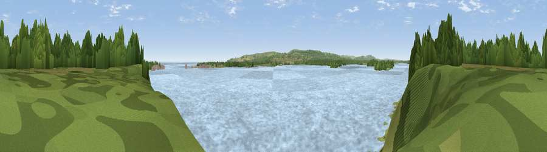

Viewpoint near Poole
#39057 in England · top 77% of its area beats it · near PooleWhere it is
The exact computed spot (SZ 02475 87438). Click the marker for map links.
The view, rendered

A 360° render of this exact spot computed from the terrain model, tree cover and land cover — summer colours, afternoon light, calibrated against photographs of famous viewpoints. Real trees, hedges and buildings will differ in detail.
The panorama
Grey silhouette: terrain skyline in each direction (720 bearings, Earth curvature and refraction included). Dashed green: skyline with trees (+15 m) and buildings (+8 m) as obstacles. Blue strip: how far the ground is visible on each bearing.
Where the view opens
Wedge length = distance to the farthest visible ground on that bearing (vegetation-aware). Rings at 10, 25 and 50 km.
What fills the view
83% water · 8% woodland · 7% grassland · 1% built-up ·
Angular shares of the visible panorama (visual magnitude), not map area. Landscape diversity 0.28 (0–1 Shannon).
Key numbers
More beautiful places nearby
The staircase of upgrades: each row has a higher view potential than everything closer. Driving times are estimates from straight-line distance, calibrated against real road routing — check an actual route before setting out.
| Place | Direction | Drive | Score |
|---|---|---|---|
| Viewpoint near Poole | NE · 3 km | ~7 min | 37.8 |
| Blake Hill Viewpoint | NNE · 3 km | ~8 min | 42.8 |
| Viewpoint near Bournemouth | ENE · 4 km | ~9 min | 51.7 |
| Viewpoint near Poole | N · 5 km | ~11 min | 55.7 |
| Viewpoint near Studland | SSE · 6 km | ~13 min | 62.6 |
| Ballard Down | S · 6 km | ~13 min | 83.2 |
| Viewpoint near Harman's Cross | SSW · 7 km | ~14 min | 84.1 |
| Viewpoint near Worth Matravers | SW · 13 km | ~23 min | 86.0 |
50.68659, -1.96633 · source: osm viewpoint · position refined by local search. Computed location — check access rights before visiting.